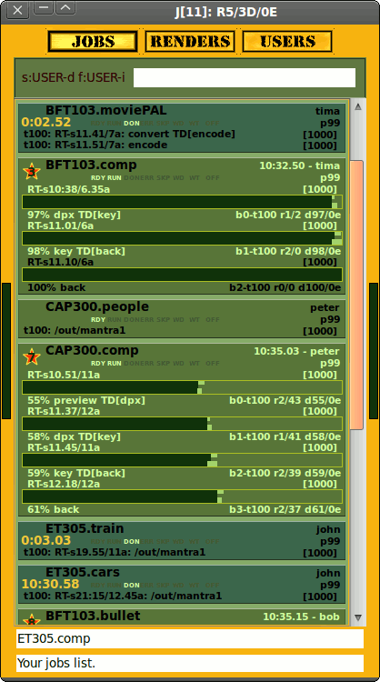
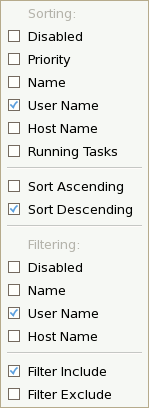
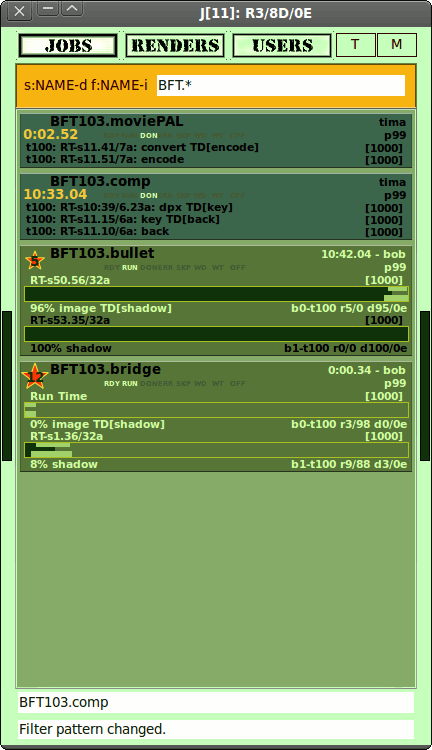

Watch - Minimalistic GUI for Afanasy
$ afwatch
It works simple like a browser. Server does not now anything about Watch. You can launch several watches.
Super user mode:
Type password to switch to it. You can see and manipulate all users jobs.
Jobs Tab (in super user mode Watch changes border color)
|

|
Sort&Filter Control Widget

Right Mouse Button (RMB) Menu

Sort&Filter Control allows you to define items sorting and filtering conditions.
You can choose sorting parameter and direction or disable sorting at all
(disabling is equivalent to empty filter expression string).
Choose filtering parameter and condition (to include or exclude pattern) or disable filtering at all.
When filtering is working Sort&Filter Control highlights its widget background color.
|

|
|
Reg border - "Visor" mode
|
Sort&Filter Control
|
White border - "GOD" mode
|
|